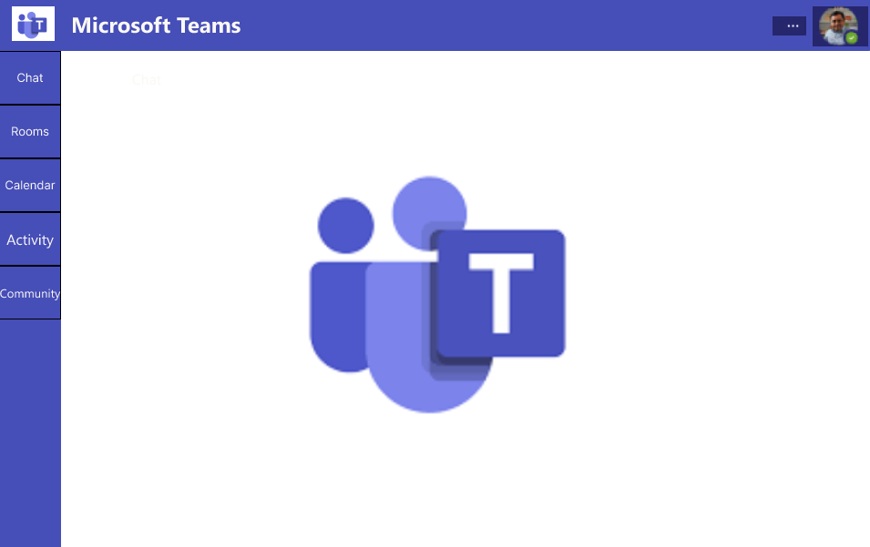
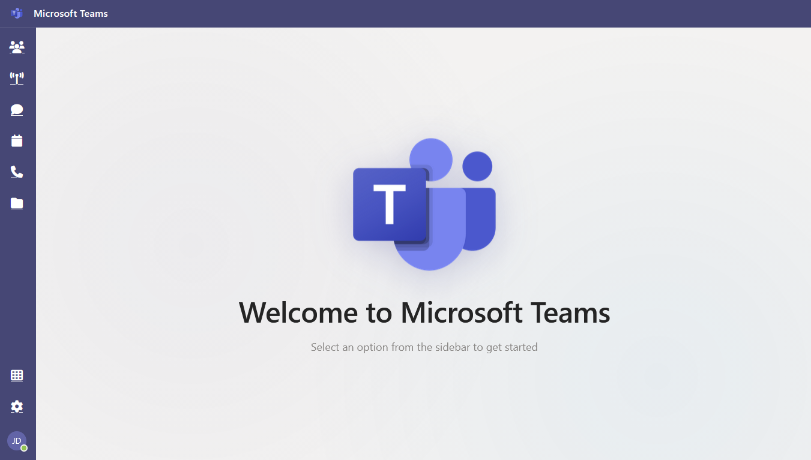
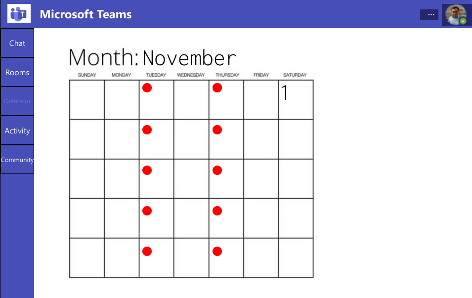
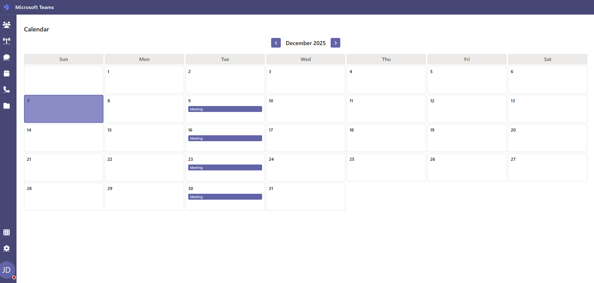
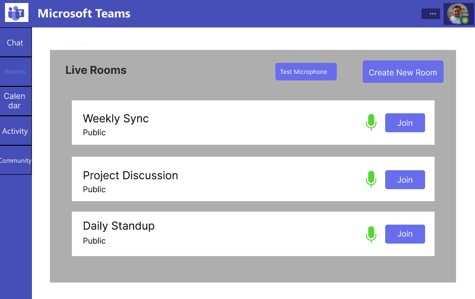
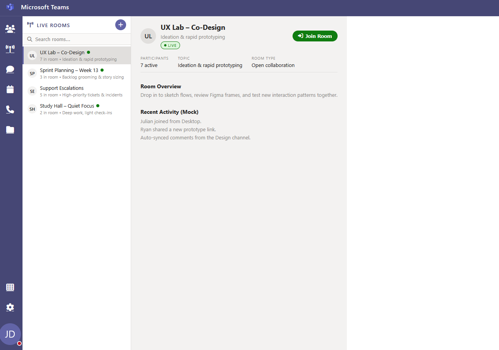
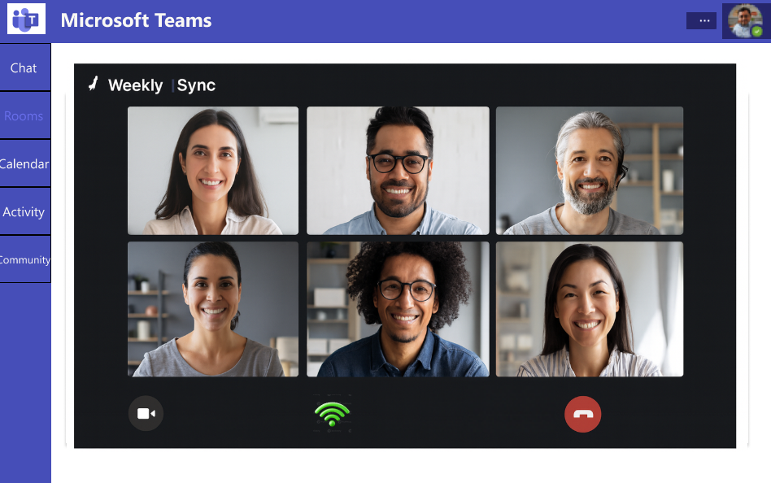
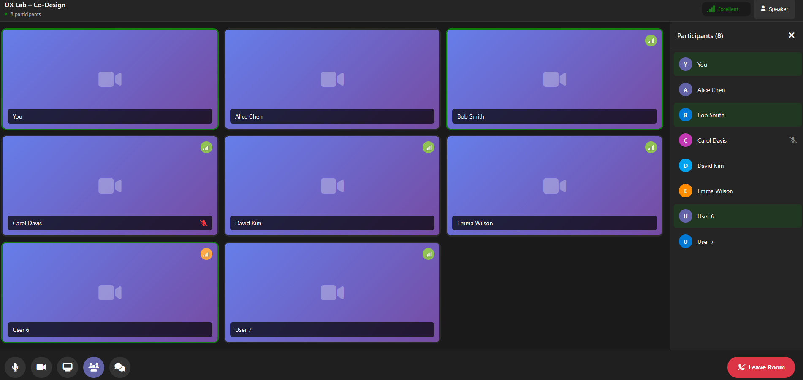
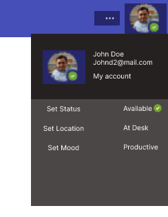
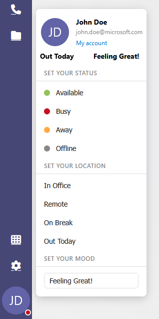

Project Overview
Hello, my name is Efren Antonio, and this site showcases my ITIS 5390 - Capstone Interaction Design Project at UNC Charlotte. This project focuses on redesigning Microsoft Teams to improve productivity and enhance team collaboration. A key feature of this redesign is the introduction of Live Rooms: always-open voice and video spaces where team members can drop in to collaborate in real time, ask quick questions, or brainstorm, and leave seamlessly when finished, similar to the experience of modern drop-in communication platforms but designed for a professional work environment. The project emphasizes user-centered design, accessibility, and seamless integration of new functionality to create a more focused and efficient collaboration experience.
I worked in a group of 6 cross-functional student team members for the duration of a whole semester (August 2025 - December 2025). My role in the group was UX researcher which involved conducting user research to identify pain points in the current Microsoft Teams interface, using that research to develop wireframes and prototypes using Figma, and eventually implementing a completed redesign using HTML, CSS, JavaScript, and JSON. Below are links to key project artifacts:
My Contributions
As the UX researcher for the InnovateSync project, my contributions included conducting user research to identify pain points, helping build wireframes and prototypes, and collaborating closely with team members to integrate feedback and improve the user experience throughout the development process. Throughout the project, I mainly focused on user related feedback regarding usability and accessibility, ensuring that our redesign met the needs of diverse users. I also contributed to the final implementation of the redesign using technologies such as HTML, CSS, JavaScript, JSON, Figma for prototyping, and GitHub for version control. I also spent additional time testing and debugging the final product to ensure a smooth user experience.
Specific tasks I undertook include:
- Sidebar Navigation: Implemented a more intuitive and accessible sidebar navigation system.
- Profile Pop-Up: Designed and implemented a user-friendly profile pop-up interface where you can set status, work location, and mood.
- JavaScript: Helped in implementing interactive features and handled dynamic content updates to improve user engagement and functionality.
- Bug Fixing: Spent numerous hours locating and fixing bugs to ensure a smooth and reliable user experience.
- CSS: Overall style cleanup and optimization to enhance consistency, user accessibility, and maintainability.
My Journey
The capstone project has been a transformative experience that allowed me to apply knowledge from previous coursework in a practical setting while honing my skills in user-centered design and collaboration. I learned how to conduct thorough user experience research and translate insights into actionable design improvements, which guided key decisions throughout the project. Along the way, I faced challenges such as continually refining the navigation function and balancing the team's diverse experience levels with technical constraints, both of which required creative problem-solving, adaptability, and effective teamwork. Through overcoming these obstacles, I gained valuable skills in project management, communication, and collaboration, as well as technical skills in implementing design solutions and conducting usability research. Overall, this experience contributed significantly to my personal and professional growth, reinforcing the importance of perseverance, adaptability, and user-focused design in achieving successful outcomes.
Visuals
Below are visuals highlighting the journey from initial Figma prototype (LEFT) to final design (RIGHT) for the Microsoft Teams redesign.
Project home page:


Calendar Page:


Live Rooms Page:


Live Rooms Call:


Profile Pop-Up:

